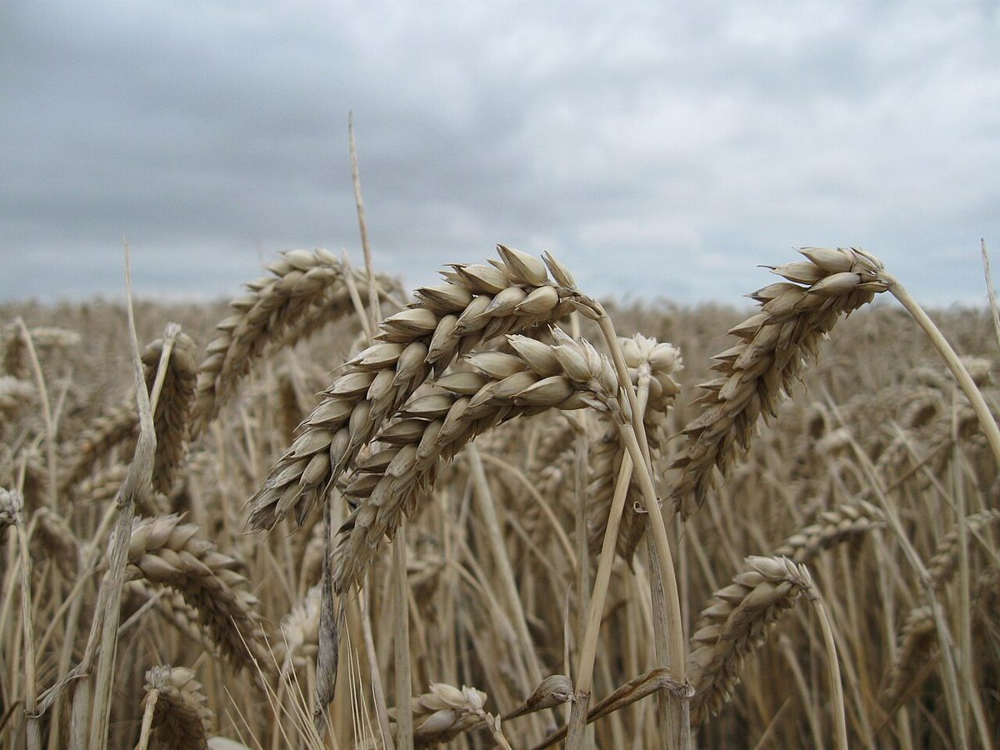

店のこと
店のこと
お店について確認できているのは、所在地とInstagramのアカウントだけです。
このページの「想像してみる」部分は、制作側が想像して書いたものです。お店の実際の様子・考え・商品とは関係がありません。
確認できていること
- 店名は「Pain des NOI」、業種はパン屋
- 所在地は茨城県那珂郡東海村船場661-1(〒319-1115)
- 電話番号はなし。連絡はInstagramから
- 営業時間・定休日・メニュー・価格・ご予約・駐車場は準備中

想像してみる
3本のネオン管の、読み方
- Nならべる。並んだパンの写真を集めた管です。
- Oおーぶん。窯と焼き色の写真を集めた管です。
- Iひとつぶ。麦や粉の写真を集めた管です。
3つの読みは制作側の遊びで、お店の名前の意味とは無関係です。お店の考えや提供内容を示すものでもありません。



もっと知るには
Instagramが手がかりです
お店の最新の情報は、Instagramで確認できます。このページの写真・文章は、ご提供いただいたものに差し替えます。